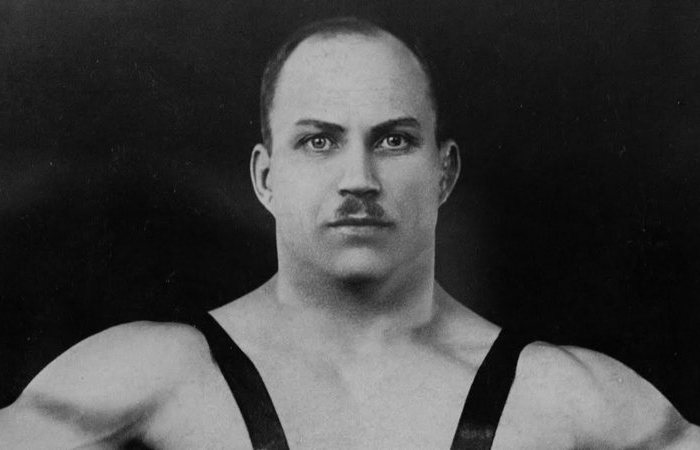
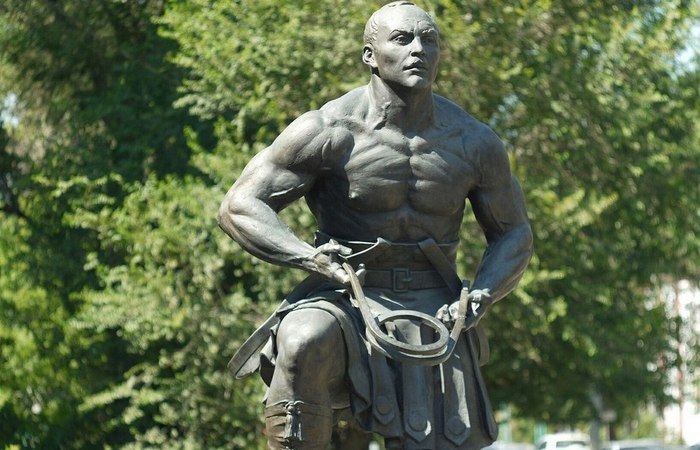
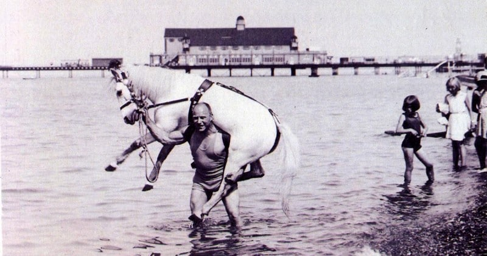
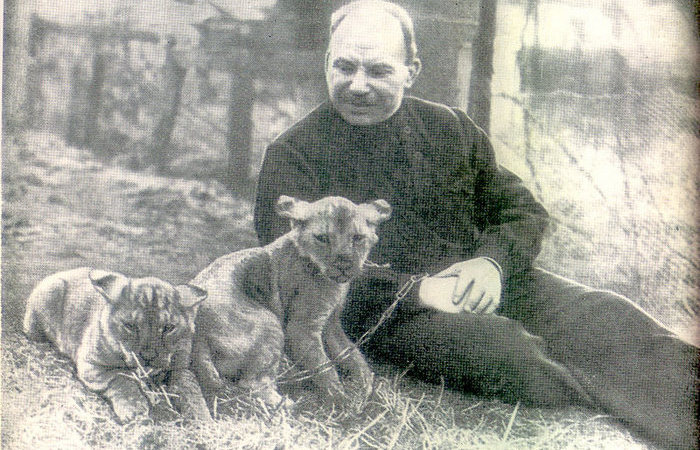
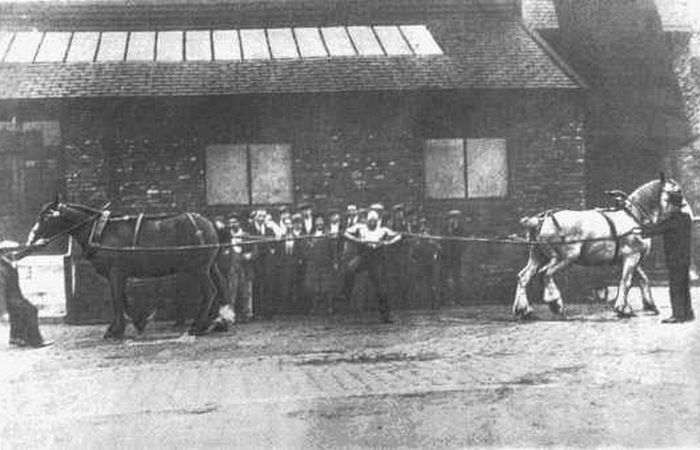

Alexander Ivanovich Zass
An outstanding Russian and Soviet circus strongman of the first half of the 20th century, who performed in Europe.

About
Alexander Ivanovich Zass – known as "Iron Samson," was an outstanding Soviet circus strongman.
Biography of Alexander Zass — the Legendary Strongman Alexander Zass was one of the most famous strongmen of the 20th century, known not only for his extraordinary physical strength but also for his unique training system. He was often called the “Iron Samson,” a name that became a symbol of incredible endurance and inner power.
Biography of Alexander Zass — the Legendary Strongman
Alexander Zass was one of the most famous strongmen of the 20th century, known not only for his extraordinary physical strength but also for his unique training system. He was often called the “Iron Samson,” a name that became a symbol of incredible endurance and inner power.Birth and Origins
Alexander Ivanovich Zass was born on February 23, 1888, in the Russian Empire (in the territory of modern-day Lithuania). He grew up in an ordinary family, but from an early age showed a strong interest in physical strength and the capabilities of the human body. As a child, he was not particularly large or muscular, but he stood out for his determination and curiosity. These qualities helped him achieve remarkable success in the future despite lacking a naturally powerful physique. Childhood and First Steps Toward Strength In his youth, Alexander was fascinated by the circus and admired strongmen performances. He was especially inspired by acts involving breaking chains and lifting heavy weights. At that time, he set a goal to become just as strong. Interestingly, Zass trained on his own. He did not have access to modern gym equipment, so he used whatever was available—stones, metal objects, and even animals. The key feature of his training was the development of tendons rather than just muscles. He believed that true strength comes from tendons, and this idea became the foundation of his unique training method.Military Service and Escape from Captivity
During World War I, Alexander Zass served in the cavalry. It was during this time that he demonstrated his strength in real-life situations. According to legend, he was able to carry wounded soldiers off the battlefield and even lift horses. Later, Zass was captured by Austrian forces but managed to attempt escape several times. The most famous episode tells of him breaking chains and escaping captivity using his strength alone. This story helped turn him into a legend.Strongman Career and Circus Fame
After the war, Alexander Zass began performing in circuses across Europe. He quickly became famous thanks to his unique acts: breaking metal chains holding heavy objects with his teeth bending iron bars withstanding extreme pressure from heavy loads His stage persona “Samson” attracted large audiences. He performed in the United Kingdom, France, and other countries, becoming an international star. What made Zass especially remarkable was that he did not have massive muscles, yet he displayed incredible strength. This made his performances even more impressive.Unique Training System
Alexander Zass developed his own training system based on isometric exercises. He believed that: strength depends not only on muscles but also on tendons static exercises develop real power control over the body is more important than muscle size Today, his methods are widely used in fitness and athletic training. Many modern trainers acknowledge that Zass was far ahead of his time.Personal Life and Final Years
Alexander Zass spent much of his life abroad, especially in the United Kingdom, where he became very well known. He continued performing and training even in his later years, maintaining excellent physical condition. Zass passed away on September 26, 1962, in London.The Legacy of Alexander Zass
Alexander Zass left behind not only a fascinating biography but also an important legacy: popularization of strength training development of isometric exercises inspiration for athletes around the world His story is a powerful example of how determination and self-belief can lead to extraordinary achievements. Why Alexander Zass Is Still Relevant Today In the modern fitness world, Zass’s ideas are becoming popular again. More and more people understand that strength is not just about appearance, but about functionality. His approach is ideal for those who want to:- - develop real strength
- - train without complex equipment
- - improve health and endurance
Alexander Zass was not just a strongman—he was a symbol of human potential. His life proves that true strength comes not from muscles, but from character.
Monument

Monument to Alexander Zass | Orenburg, Kobozeva St., 45
Portfolio

During the fighting, he was able to carry a wounded horse out from under the special stele

Alexander knew how to train animals. This helped him escape captivity.

In the Middle Ages, people were executed by tearing their bodies into pieces. Alexander could have stopped both.